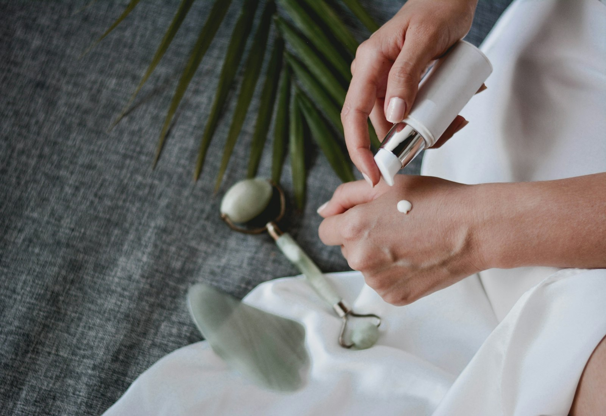

Mi piel
Hola, Daniela.
Tu protocolo de calidad de piel va en el mes 4 de 12. Aquí está la evolución, lo que viene y lo que conviene mantener.
{{ e.date }}
{{ e.state }}
{{ e.title }}
{{ e.body }}
Tu registro fotográfico.
Fotografía estandarizada en cada control: misma luz, misma distancia, mismo encuadre. Es la única comparación que sirve.
Tus imágenes son parte de tu historia clínica y no se publican sin tu autorización escrita.
Indicadores del control de junio
{{ m.k }}
{{ m.v }}
{{ m.note }}
Valoraciones clínicas subjetivas registradas por tu médica tratante. No son mediciones de laboratorio.
{{ o.ref }}
{{ o.date }}
{{ o.what }}
{{ o.state }}
{{ o.total }}
Recibes comprobante de pago por cada reserva. La factura electrónica se emite si la solicitas.
Tu cuidado entre sesiones.
Lo que haces en casa sostiene el resultado clínico. Estas son las indicaciones que te entregó tu médica tratante.
{{ h.when }}
{{ h.what }}
